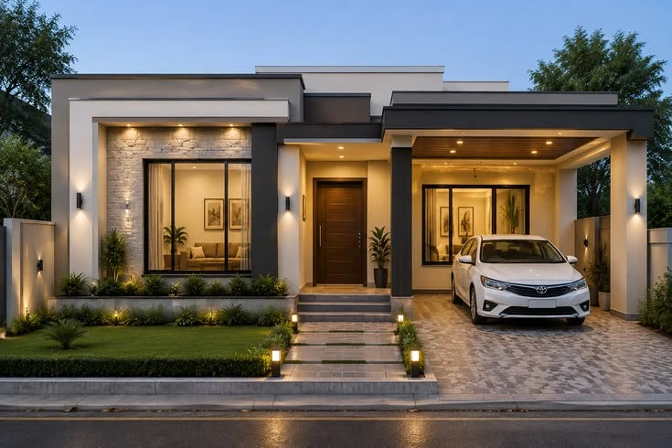

Tren Desain Rumah Minimalis 2026: Lebih Hangat, Lebih Manusiawi

Point Penting
- Rumah minimalis 2026 lebih menonjolkan karakter emosional dan kenyamanan dibanding kekakuan desain.
- Penggunaan warna earthy dan material alami mendominasi tren interior.
- Konsep biofilik dan smart home terjangkau menjadi prioritas di desain era modern.
Daftar Isi
- 1. Selamat Tinggal Sudut Tajam, Halo Lengkungan
- 2. Palet Warna Earthy Menggantikan Putih Dominan
- 3. Desain Biofilik: Membawa Alam Masuk ke Dalam Rumah
- 4. Material Alami dan Sentuhan Buatan Tangan
- 5. Ruang Terbuka (Open Space) yang Makin Fleksibel
- 6. Rumah Pintar yang Lebih Terjangkau
- 7. Ruang Multifungsi untuk Lahan Terbatas
Desain rumah minimalis selama ini identik dengan garis tegas, dinding putih polos, dan kesan serba kaku. Namun memasuki tahun 2026, wajah minimalisme mulai berubah. Alih-alih tampil dingin dan "aman", rumah minimalis kini justru dituntut punya karakter dan kehangatan emosional bagi penghuninya. Berikut rangkuman arah desain yang paling banyak dibicarakan tahun ini.
1. Selamat Tinggal Sudut Tajam, Halo Lengkungan
Bentuk-bentuk melengkung mulai menggantikan sudut siku yang selama ini jadi ciri khas minimalis. Lengkungan ini muncul di berbagai elemen, mulai dari ambang pintu berbentuk archway, sudut dinding yang dibuat tumpul, hingga furnitur bundar seperti meja kopi atau cermin oval. Kesan yang dihasilkan lebih lembut dan ramah dipandang, tanpa menghilangkan kesederhanaan khas gaya minimalis.
2. Palet Warna Earthy Menggantikan Putih Dominan
Jika sebelumnya putih bersih adalah warna wajib rumah minimalis, tren 2026 bergeser ke nuansa earthy yang lebih hangat: beige, krem, cokelat muda, terracotta, hingga abu-abu hangat. Perubahan warna ini membuat ruangan terasa lebih nyaman dan personal, bukan sekadar rapi di foto tapi dingin saat dihuni sehari-hari.
3. Desain Biofilik: Membawa Alam Masuk ke Dalam Rumah
Konsep biofilik semakin populer sebagai cara menghadirkan ketenangan di tengah rutinitas. Wujudnya bisa berupa taman terbuka di tengah rumah (inner courtyard) yang berfungsi ganda untuk sirkulasi udara dan pencahayaan alami, penggunaan tanaman pemurni udara sebagai elemen dekorasi utama, hingga jendela besar dari lantai ke langit-langit yang melebur batas antara ruang dalam dan luar rumah.

4. Material Alami dan Sentuhan Buatan Tangan
Kayu solid, kain bertekstur, kulit, dan detail handmade mulai banyak dipilih untuk menggantikan permukaan serba polos dan mengilap. Material-material ini memberi kedalaman dan rasa "hidup" pada ruangan, sekaligus jadi respons atas kritik bahwa minimalisme yang terlalu bersih justru terasa hampa dan kurang mencerminkan karakter penghuninya.
5. Ruang Terbuka (Open Space) yang Makin Fleksibel
Ruang tamu, ruang makan, dan dapur banyak dirancang menyatu tanpa sekat permanen. Konsep ini membuat rumah terasa lebih luas, mempermudah interaksi antar anggota keluarga, dan memaksimalkan cahaya alami. Untuk tetap menjaga privasi, elemen pembatas fleksibel seperti rak terbuka, partisi kayu, atau tirai modern jadi solusi favorit.
6. Rumah Pintar yang Lebih Terjangkau
Smart home tak lagi identik dengan biaya mahal. Tren tahun ini menekankan integrasi teknologi hemat energi—seperti lampu otomatis, sensor pencahayaan, dan sistem keamanan pintar—yang direncanakan sejak tahap desain awal agar tidak membengkakkan biaya renovasi di kemudian hari.
7. Ruang Multifungsi untuk Lahan Terbatas
Dengan harga lahan yang terus naik, efisiensi ruang menjadi prioritas. Satu ruangan dirancang untuk mendukung beberapa fungsi sekaligus, misalnya ruang kerja yang bisa disulap jadi kamar tamu, atau area di bawah tangga yang dimanfaatkan sebagai storage maupun sudut baca.
Tren desain rumah minimalis 2026 menunjukkan pergeseran nilai: dari sekadar "terlihat rapi" menjadi "terasa nyaman". Garis bersih dan efisiensi ruang khas minimalis tetap dipertahankan, tapi dipadukan dengan kehangatan material alami, warna earthy, dan sentuhan personal yang mencerminkan karakter penghuninya.
Bagi kamu yang berencana membangun atau merenovasi rumah tahun ini, kombinasi kesederhanaan dan kenyamanan emosional inilah yang layak jadi acuan utama.